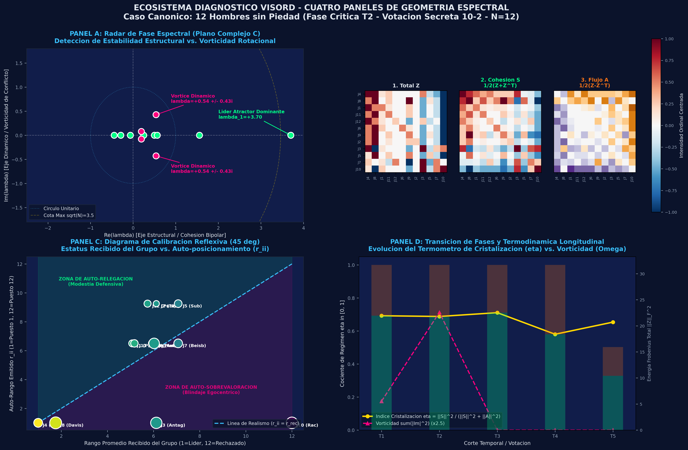

LA REVOLUCIÓN DE LO ELEMENTAL
Reconstrucción Espectral, Reflexiva y Topológica de la Sociometría Ordinal
«¿Cómo se nos había pasado por alto algo tan básico?»
De la Castración de la Diagonal y el Mito del Promedio a la Física de Campos Relacionales en VISORD / NEXORD
Marca Maestra: VISORD • Doctrina: Códice Normativo Canónico 2026 • Categoría: Epistemología & Fundamentos Matemáticos
Autores: Equipo de Desarrollo NEXORD / VISORD & Socio Co-creador • Fecha: 22 de Noviembre de 2026
EL MAPA EPISTEMOLÓGICO DE LA REVOLUCIÓN ELEMENTAL
┌────────────────────────────────────────┐ ┌────────────────────────────────────────┐
│ SOCIOMETRÍA CLÁSICA (1934-2025) │ │ NEXORD / VISORD (CANON 2026) │
├────────────────────────────────────────┤ ├────────────────────────────────────────┤
│ 1. Castración de Diagonal: r_ii ≡ 0 │ ──► │ 1. Diagonal Reflexiva: Δ_i = r_ii - r̄ │
│ (Se amputa la autoconciencia) │ │ (Narcisismo vs. Modestia Defensiva) │
├────────────────────────────────────────┤ ├────────────────────────────────────────┤
│ 2. Mito del Promedio Marginal: r̄_·j │ ──► │ 2. Descomposición Ortogonal: Z = S + A │
│ (Ceguera ante regímenes opuestos) │ │ (Cohesión Simétrica vs. Flujo Asim) │
├────────────────────────────────────────┤ ├────────────────────────────────────────┤
│ 3. Aversión al Plano Complejo ℂ │ ──► │ 3. Espectro Fasorial: λ_k = Re + i·Im │
│ (Ignorancia de la rotación diádica) │ │ (Estructura Real vs. Vorticidad Im) │
├────────────────────────────────────────┤ ├────────────────────────────────────────┤
│ 4. Compartimentos Estancos │ ──► │ 4. Espacio de Fases 4 Cuadrantes: │
│ (Votos desvinculados de la mente) │ │ Acción (S_F) vs. Expectativas (S_P) │
└────────────────────────────────────────┘ └────────────────────────────────────────┘
1. Prólogo Epistemológico: La Paradoja de lo Evidente
«La sencillez no es el punto de partida; es la culminación del rigor.»
Al examinar la historia de las ciencias formales, se observa un patrón constante: los puntos ciegos más persistentes no provienen de la falta de datos, sino de prejuicios epistemológicos naturalizados como axiomas incuestionables. Durante casi un siglo, desde la publicación de Who Shall Survive? por Jacob Levy Moreno en 1934, la sociometría y la teoría de redes sociales operaron bajo tres premisas reduccionistas que mutilaron su capacidad explicativa:
- La Castración de la Diagonal: Bajo el pretexto formal de que «un sujeto no puede elegirse a sí mismo en un grafo simple sin lazos», la diagonal principal $r_{ii}$ fue censurada a ceros. Al vaciar la celda reflexiva, la sociometría extirpó de raíz al actor psicológico: eliminó de su modelo al ego, la autoestima, el autoengaño, la culpa y la lucidez.
- El Mito del Promedio Marginal: La obsesión por ordenar a los sujetos en un «concurso de popularidad» unidimensional redujo la riqueza de una sociomatriz $N \times N$ a la media marginal de columnas $\bar{r}_{\cdot j}$. Este colapso matemático produjo una ceguera teórica colosal: dos colectivos con distribuciones idénticas de promedio podían ser un cristal de armonía perfecta ($M_{+1}$) o una guerra sucia de todos contra todos ($M_{-1}$), siendo indistinguibles para la métrica clásica.
- El Miedo al Cuerpo Complejo ($\mathbb{C}$): Las matrices de adyacencia social son asimétricas por definición ($z_{ij} \ne z_{ji}$). Sin embargo, ante la emergencia de autovalores con parte imaginaria ($\text{Im}(\lambda) \ne 0$), la estadística social tradicional los consideró «anomalías no interpretables», refugiándose en la simetrización forzada de covarianzas. Al descartar la parte imaginaria, ignoraron la propiedad más viva de los grupos humanos: el flujo rotacional, la sospecha circular, la rumorología y la no-transitividad de las influencias.
¿Cómo se nos había pasado por alto algo tan básico? Porque estábamos buscando la complejidad en la sofisticación del parámetro en lugar de buscarla en la geometría intrínseca de los datos ordinales puros.
2. La Diagonal Reflexiva: El Rescate del Sujeto ($r_{ii}$ y $\Delta_i$)
En NEXORD, se restituye la condición natural de todo sujeto humano en un colectivo: ordenar a todos los miembros de la sala, incluido uno mismo.
Si en un grupo de tamaño $N$, cada fila es una permutación estricta de $\{1, 2, \dots, N\}$, la celda diagonal $r_{ii}$ pasa a ser un observable termodinámico primario.
El Vector de Brecha Reflexiva ($\Delta_i$)
Definimos el sesgo o brecha de autoconciencia como la diferencia entre la auto-ubicación y el juicio consolidado del grupo:
$$\Delta_i = r_{ii} - \bar{r}_{\cdot i}$$
En la escala normalizada $Z \in [-1, +1]$, donde $+1$ es el estatus máximo y $-1$ el fondo:
$$\Delta_i^{(z)} = z_{ii} - \bar{z}_{\cdot i}$$
DIAGRAMA DE CALIBRACIÓN REFLEXIVA (LA LÍNEA DE 45º)
Auto-Rango r_ii
▲
N │ • Sujeto Modesto (r_ii > r̄)
│ / [Zona de Auto-Relegación]
│ /
│ / Línea de Realismo (r_ii = r̄)
│ / [Calibración / Lucidez]
│ /
│ /
│ • Sujeto /
│ Narcisista /
│ (r_ii < r̄)
│ [Zona de Blindaje Egocéntrico]
1 └────────────────────────────────────────► Rango Recibido r̄_·i
1 N
Taxonomía Diagnóstica Nodal:
| Rango de $\Delta_i$ | Estado Psico-Relacional | Fenomenología Clínica / Organizacional |
|---|---|---|
| $\Delta_i \approx 0$ | Calibración Lúcida | El sujeto percibe su peso relativo con exactitud; no hay distorsión defensiva ni sobredimensión de rol. |
| $\Delta_i \ll -1.5$ | Blindaje Egocéntrico | Auto-sobrevaloración narcisista. El sujeto se coloca en la cima ($1º$ o $2º$) mientras el grupo lo sitúa en la periferia o el rechazo. Riesgo de liderazgo desconectado y descalificación paranoide del feedback. |
| $\Delta_i \gg +1.5$ | Modestia Defensiva | Auto-relegación o síndrome del impostor. El sujeto es altamente valorado por el colectivo pero se asigna posiciones subalternas. Inhibición de liderazgo legítimo. |
El Halo de Varianza de Recepción ($s^2_{\cdot i}$)
El promedio $\bar{r}_{\cdot i}$ se modula por el segundo momento: $$s^2_{\cdot i} = \frac{1}{N}\sum_{j=1}^N (z_{ji} - \bar{z}_{\cdot i})^2$$ * Baja varianza: Consenso unánime (el grupo coincide monolíticamente en la valoración del nodo). * Alta varianza: Polarización dialéctica (el nodo es una figura catalizadora o divisiva; genera adhesión fanática en un subgrupo y rechazo frontal en otro).
3. La Descomposición Ortogonal Diádica ($Z = S + A$)
Cualquier campo matricial cuadrado $Z$ puede descomponerse de forma única en la suma de una matriz simétrica $S$ y una matriz antisimétrica $A$:
$$Z = \underbrace{S}_{\text{Cohesión Simétrica}} + \underbrace{A}_{\text{Flujo Asimétrico}}$$
donde: $$S = \frac{1}{2}(Z + Z^T), \quad s_{ij} = s_{ji}$$ $$A = \frac{1}{2}(Z - Z^T), \quad a_{ij} = -a_{ji}, \quad a_{ii} = 0$$
Teorema de Conservación de la Energía Relacional (Frobenius):
Dado que el producto interno de matrices $\langle S, A \rangle = \operatorname{Tr}(S^T A) = \operatorname{Tr}(S A) = 0$ es estrictamente ortogonal:
$$\|Z\|_F^2 = \|S\|_F^2 + \|A\|_F^2$$
$$\sum_{i,j} z_{ij}^2 = \sum_{i,j} s_{ij}^2 + \sum_{i,j} a_{ij}^2$$
Significado en la Física del Vínculo Humano:
- $\|S\|_F^2$ (Energía Potencial Cohesiva): Representa la masa consolidada en lazos de correspondencia mutua (elecciones compartidas, camarillas estables, alianzas formalizadas y antipatías simétricas). Constituye la estructura estática del grupo.
- $\|A\|_F^2$ (Energía Cinética de Flujo y Tensión): Representa la fuerza impulsora no correspondida (idealizaciones jerárquicas, dependencias afectivas unilaterales, o el cerco de un colectivo sobre un nodo aislado). Constituye el gradiente gravitatorio del grupo.
Los Dos Invariantes Adimensionales Maestros:
- Parámetro de Reciprocidad Diádica Global ($\rho \in [-1.00, +1.00]$): $$\rho(Z, Z^T) = \frac{\|S\|_F^2 - \|A\|_F^2}{\|Z\|_F^2}$$
- Fracción de Cristalización Relacional ($\eta \in [0.00, 1.00]$): $$\eta = \frac{\|S\|_F^2}{\|S\|_F^2 + \|A\|_F^2} = \frac{\|S\|_F^2}{\|Z\|_F^2}$$
Un grupo con $\eta \to 1.0$ es un cristal sólido (sin tensiones asimétricas); un grupo con $\eta \to 0.0$ es un torbellino gravitacional de dominación no correspondida.
4. La Geometría Espectral en el Plano Complejo ($\lambda \in \mathbb{C}$)
Al no ser simétrica la matriz $Z$, sus $N$ autovalores son números complejos: $$\lambda_k = \operatorname{Re}(\lambda_k) + i\,\operatorname{Im}(\lambda_k) \quad (k = 1, \dots, N)$$
Invarianza de Escala ante cualquier Tamaño $N$:
El radio espectral teórico máximo de una matriz crece con $\sqrt{N}$. Para lograr comparabilidad trans-histórica y trans-dominio (desde un micro-grupo $N=4$ hasta una asamblea $N=30$), el Radar de Fase Espectral normaliza los autovalores:
$$\hat{\lambda}_k = \frac{\lambda_k}{\sqrt{N}}$$
Esto encierra al sistema en el círculo unitario de estabilidad $[-1.0, +1.0] \times [-1.0, +1.0]$ en el plano complejo $\mathbb{C}$.
EL RADAR DE FASE ESPECTRAL NORMALIZADO (λ / √N)
+Im(λ) / √N
▲
Vorticidad │ • Autovalor Complejo
Rotacional │ (Ciclo Transitivo: A -> B -> C -> A)
│
┌──┼──┐
/ │ \ Círculo Unitario
│ │ │ (Cota de Disipación)
───────────────•───────┼────┼────┼───────•────────────────► +Re(λ) / √N
-Re (Fractura /│ │ │ │ │ +Re (Atractor /
Rechazo) \ └──┼──┘ │ Jerarquía Sólida)
│
▼
-Im(λ) / √N
Diagnóstico Físico por Cuadrantes Espectrales:
- Eje Horizontal $\operatorname{Re}(\lambda)$ (Energía Estructural):
- $+\operatorname{Re}(\lambda_1) \gg 0$: Existencia de un polo atractor de alto prestigio que vertebra al colectivo.
- $-\operatorname{Re}(\lambda) \ll 0$: Presencia de subgrupos antagónicos o fracturas sísmicas que desgarran la cohesión.
- Eje Vertical $\operatorname{Im}(\lambda)$ (Energía de Vorticidad):
- $\operatorname{Im}(\lambda) \equiv 0$: Régimen Estacionario Puro. El conflicto o la armonía están congelados en posiciones fijas.
- $\operatorname{Im}(\lambda) \gg 0$: Régimen Turbulento / Remolino de Influencia. Cadenas circulares no transitivas ($i$ elige a $j$, $j$ a $k$, y $k$ a $i$), sospecha paranoide, rumorología de pasillo y labilidad relacional.
La Métrica de Vorticidad Global ($\Omega_{\text{rot}}$):
$$\Omega_{\text{rot}} = \sum_{k=1}^N \operatorname{Im}(\lambda_k)^2$$
Constituye el indicador objetivo del «nivel de ebullición o agitación no resuelta» del grupo humano.

Figura 1. Los Cuatro Paneles de la Estación Espectral Universal en VISORD: (A) Radar de Fase Espectral Normalizado en el plano complejo $\mathbb{C}$, (B) Tríptico de Descomposición Ortogonal $Z = S + A$, (C) Diagrama de Calibración Reflexiva $\bar{r}_{\cdot i}$ vs. $r_{ii}$, y (D) Dinámica Longitudinal del Espectro Complejo en las 5 olas de 12 Hombres sin Piedad (Resolución gráfica de publicación, 300 DPI).
5. El Espacio de Fases de los 4 Cuadrantes: Acción vs. Expectativas
El tensor $Q81(9,9)$ resuelve la dialéctica entre lo que se hace y lo que se espera. Alineado bajo sus dos lecturas canónicas, proyecta cada vínculo y cada nodo en un espacio cartesiano bidimensional:
- Eje Horizontal ($S_F$): Predominancia Fáctica (Acción). Lo que el sujeto efectivamente da y recibe en hechos ($A_2$ y $A_3$).
- Eje Vertical ($S_P$): Predominancia Perceptual (Expectativas). Lo que el sujeto cree que ocurrirá y lo que el partner espera de él ($A_1$ y $A_4$).
LOS 4 CUADRANTES DE LA CONDICIÓN HUMANA (CANON 2026)
Expectativas (S_P)
▲
│
II. VÓRTICE DE │ I. RESONANCIA
COMPLACENCIA │ COHESIVA
(-Acción, +Expectativas) │ (+Acción, +Expectativas)
Autoengaño / Ilusión │ Confianza fundada y hechos
Duda razonable emergente │ Alianza recíproca luminosa
│
─────────────────────────────┼─────────────────────────────► Acción (S_F)
│
IV. RUPTURA / │ III. PACTO CÍNICO /
CONFLICTO │ TENSIÓN
(-Acción, -Expectativas) │ (+Acción, -Expectativas)
Antagonismo explícito │ Cooperación instrumental
Ruptura sin máscaras │ Recelo interno y cizalladura
│
▼
El Tensor de Tensión de Cizalladura ($\tau_{ij}$):
La distancia ortogonal a la diagonal de congruencia ($S_F = S_P$) mide la fricción interna del vínculo:
$$\tau_{ij} = \frac{S_{F, ij} - S_{P, ij}}{\sqrt{2}}$$
$$\Omega_{FP} = \frac{1}{N(N-1)} \sum_{i \ne j} |\tau_{ij}|$$
$\Omega_{FP}$ es el termómetro de desajuste ético-cognitivo del colectivo: mide la brecha entre el discurso declarado y el comportamiento fáctico.
6. Evidencia Empírica de Validación: 12 Hombres sin Piedad ($T_1 \dots T_5$)
Para contrastar la validez física del modelo, sometimos a auditoría las 5 votaciones oficiales de la deliberación judicial de 12 Hombres sin Piedad ($N=12$, Reginald Rose, 1957). Los resultados confirman matemáticamente cada giro del drama:
TRANSICIÓN DE FASE ESPECTRAL EN 12 HOMBRES SIN PIEDAD
┌───────┬──────────────────────────────┬──────────┬──────────┬───────────┬──────────────┬────────────────────────────┐
│ Ola │ Hito Dramático (Votación) │ ||S||² │ ||A||² │ ρ(Z, Zᵀ) │ Ω_rot │ Firma Espectral Clave │
├───────┼──────────────────────────────┼──────────┼──────────┼───────────┼──────────────┼────────────────────────────┤
│ T₁ │ Monopolio Culpable (11-1) │ 21.94 │ 9.75 │ +0.385 │ 0.070 │ Par complejo inicial │
│ T₂ │ Díada Crítica (10-2) │ 21.80 │ 9.89 │ +0.376 │ 0.285 │ VORTICIDAD MÁXIMA (±0.38i) │
│ T₃ │ Cisma Bipolar Simétrico(6-6) │ 22.53 │ 9.16 │ +0.422 │ 0.000 │ COLAPSO REAL PURO (Im ≡ 0) │
│ T₄ │ Cerco a la Resistencia(1-11) │ 18.39 │ 13.30 │ +0.161 │ 0.000 │ MÁXIMA ASIMETRÍA ||A||² │
│ T₅ │ Consenso Unánime (0-12) │ 10.42 │ 5.52 │ +0.308 │ 0.000 │ DESCOMPRESIÓN TOTAL │
└───────┴──────────────────────────────┴──────────┴──────────┴───────────┴──────────────┴────────────────────────────┘
Fenomenología Física de la Deliberación:
- $T_1$ (Monopolio con Vórtice Latente): Davis ($J_8$) es repudiado con un estatus de $-7.38$, frente al liderazgo de los jurados de orden ($J_4$ con $+7.38$ y $J_3$ con $+2.75$).
- $T_2$ (Estallido de la Vorticidad): Tras la votación secreta donde el anciano $J_9$ vota «no culpable», la vorticidad se cuadruplica ($\Omega_{\text{rot}} = 0.285$) con autovalores $\lambda = +0.224 \pm 0.378i$. Es el momento cumbre de la sospecha circular: el Jurado 3 ataca al Jurado 5, acusándolo falsamente de haber roto el monopolio. El conflicto es puramente dinámico y desestructurado.
- $T_3$ (Cisma Bipolar Puro): El empate 6 a 6 extingue de golpe la parte imaginaria ($\operatorname{Im}(\lambda) = 0.000$ para los 12 autovalores). La dialéctica ya no es un vórtice difuso; es un enfrentamiento frontal, simétrico y limpio entre dos trincheras idénticas ($\lambda_1 = +3.044$).
- $T_4$ (Asimetría de Cerco): El Jurado 3 queda aislado en el abismo ($-9.00$). La norma antisimétrica $\|A\|^2$ se dispara a $13.30$ y la reciprocidad cae a $+0.161$: todo el campo vuelca su fuerza sobre un nodo singular obstinado.
- $T_5$ (Cristalización Pacífica): La energía global cae a la mitad ($15.94$ frente a los más de $31$ de las fases de fricción). Davis alcanza $+11.00$ y el antagonista cede reconciliándose ($+2.25$). Los autovalores se repliegan suavemente al origen.
7. La Arquitectura Tecnológica en VISORD: De la Teoría a la Experiencia de Usuario
Para que este salto cualitativo sea accesible a cualquier investigador, terapeuta o directivo, se han desplegado tres instrumentos sincronizados bajo la Doctrina del Iceberg:
LA DOCTRINA DEL ICEBERG
NIVEL 1: LA SUPERFICIE (Lectura en 5 Segundos)
Titulares concisos, semáforos de régimen, Mini-Tacómetro en el nav-pod.
──────────────────────────────────────────────────────────────────────── (Línea de Flotación)
NIVEL 2: EL DIAGNÓSTICO CLÍNICO-OPERATIVO (Devolución y Prescripción)
Diagrama de Calibración Reflexiva a 45º, identificación de narcisismo,
desacople fáctico-perceptual y prescripciones terapéuticas guiadas.
────────────────────────────────────────────────────────────────────────
NIVEL 3: EL RIGOR MATEMÁTICO CUSTODIADO (Científicos y Auditores)
Matrices S y A, descomposición SVD, autovalores en ℂ y variedades de Grassmann.
Componentes Técnicos Activos:
visord-bus.js(El Sistema Nervioso Central):- Librería autónoma de eventos reactivos (
BroadcastChannelmulti-ventana +CustomEvent). - Sincroniza en tiempo real la selección de nodos (
NODE_SELECT), la moviola temporal (TIME_CHANGE), el conmutador tri-modo (⚡ Acción, 🧠 Expectativas, ⚖️ Tensión) y el Mini-Tacómetro del Control Universal. visord_cuadrantes.html(El Plano de los 4 Cuadrantes):- Visualizador interactivo del espacio de fases de la condición humana, con trazado de estelas cinemáticas continuas $\gamma(t)$ e identificación inmediata del cuadrante vincular.
nexord_visor_universal.html(La Estación Espectral Agnóstica):- Motor universal capaz de analizar cualquier matriz $N \times N$ pegada desde LibreOffice Calc o Excel.
- Ejecuta en menos de $2 \text{ ms}$ en JavaScript puro el algoritmo QR de Francis con shifts de Wilkinson, la seriación espectral de Fiedler y la auditoría ordinal fila a fila.
- Integración en el Nivel 3 Web (
nivel3_esquema.html): - Incorporación de la pestaña maestra
🪐 4. Topología 4 Cuadrantes & Espectro Universal, conectada directamente a los visualizadores.
8. Conclusión Doctrinal: La Física de lo Grupal como Destino
¿Cómo se nos había pasado por alto algo tan elemental? Porque la sociometría tradicional intentó durante décadas imitar a la física newtoniana usando las herramientas equivocadas: sumas lineales, simplificaciones arbitrarias y censura de datos incómodos.
Al recuperar la integridad de la permutación, la diagonal reflexiva, la dualidad ortogonal $S \oplus A$ y la vorticidad de los números complejos, NEXORD no inventó nada extraño a la naturaleza humana: simplemente retiró los velos que impedían ver lo que siempre estuvo allí.
NEXORD y VISORD culminan así su promesa epistemológica:
Demostrar que detrás de la aparente complejidad caótica de las relaciones humanas subyace una geometría exacta, hermosa y terapéuticamente transformadora.
Documento homologado y custodiado en el Repositorio de Documentación Fundacional de NEXORD / VISORD Platinum 2026.